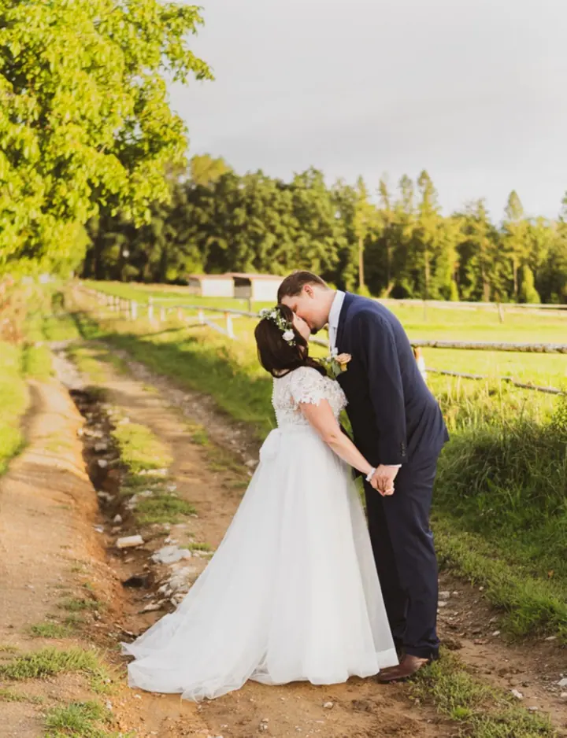
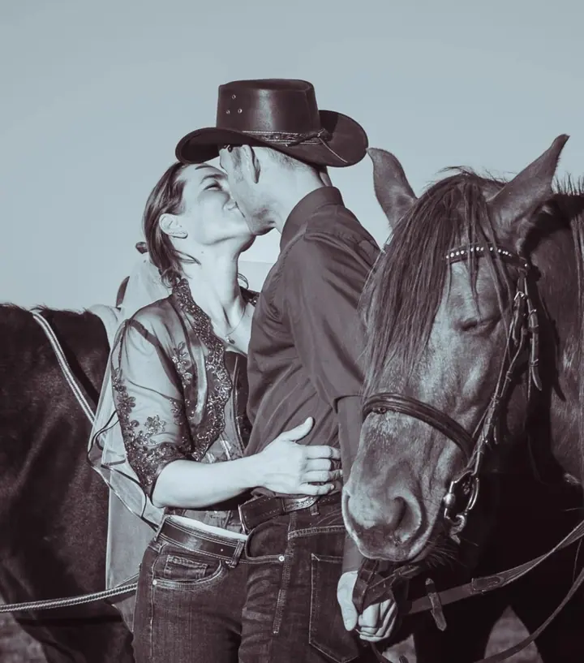
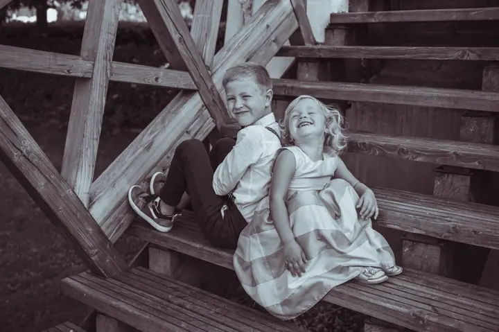

Svatby
Fotím celý svatební den od příprav nevěsty přes výzdobu až po polibek novomanželů. Chci, aby fotky byly přirozené, vystihovaly emoce a vy jste si den v klidu užili.

Jmenuji se Aneta Kirschnerová a jsem fotografka z Jeseníku. Fotím svatby, páry i děti a nejvíc mi záleží na tom, aby fotky byly přirozené a vystihovaly emoce. Focení se …
Rezervovat termínJsem fotografka z Jeseníku a focení je pro mě velkým koníčkem a vášní. Fotografie pro mě znamená vzpomínku, která navždy uchová krásný okamžik. Proto se snažím o to, aby fotky byly přirozené, vystihovaly emoce a zachytily kouzlo okamžiku.


Je pro mě důležité, aby se při focení každý cítil sám sebou. Nechci vás stavět do strnulých póz. Raději se postarám o přátelskou atmosféru, ve které se uvolníte a zapomenete, že vás někdo fotí.
Jsem také mámou dvou akčních dětí. Naučily mě být trpělivější a všímavější ke každodenním radostem a příběhům, a to se mi hodí u každého focení. Těším se na focení s vámi a na nové zážitky.
Co fotím
Fotím celý svatební den od příprav nevěsty přes výzdobu až po polibek novomanželů. Chci, aby fotky byly přirozené, vystihovaly emoce a vy jste si den v klidu užili.
Společné focení venku, klidně i s vašimi koňmi nebo jinými zvířaty. Hlavní je přátelská atmosféra a to, abyste se před foťákem cítili sami sebou.
Sama jsem máma dvou akčních dětí, takže vím, že trpělivost je základ. Fotím děti takové, jaké opravdu jsou, s jejich smíchem a radostí.
Postup
Napište nebo zavolejte, kdy a kde plánujete svatbu nebo focení. Ověřím termín a domluvíme se na dalším postupu.
Probereme, jak si den představujete, co je pro vás důležité a jaké fotky byste si přáli. Ať se na focení potkáme už jako známí.
Jsem s vámi od příprav až po chvíle, na kterých vám záleží. Starám se o klidnou a přátelskou atmosféru, abyste mohli být sami sebou.
Fotky pečlivě vyberu a upravím tak, aby zůstaly přirozené a vystihovaly emoce dne. Hotovou galerii vám pošlu.
Otázky
Jsem z Jeseníku a fotím hlavně tady. Pokud plánujete svatbu nebo focení jinde, napište mi a domluvíme se.
Vůbec ne. Je pro mě důležité, aby se každý cítil sám sebou. Nebudu vás stavět do strnulých póz, focení má být příjemný zážitek.
Ano. Sama jsem máma dvou akčních dětí, takže vím, že s dětmi je potřeba trpělivost a hravost. Nechávám je být takové, jaké jsou.
Cenu vám ráda připravím podle toho, co plánujete a jak dlouho mám u vás být. Stačí mi napsat nebo zavolat.